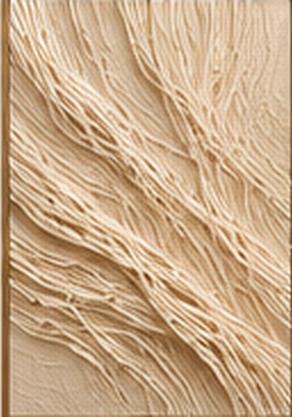
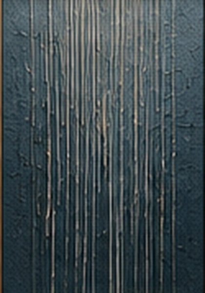
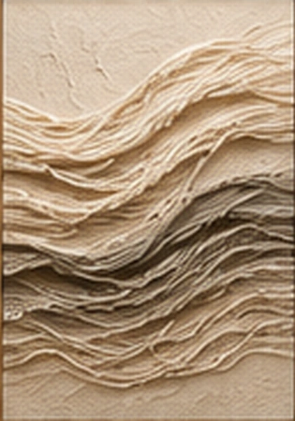
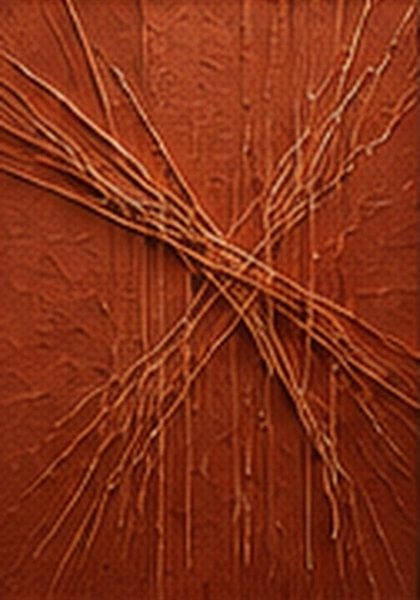
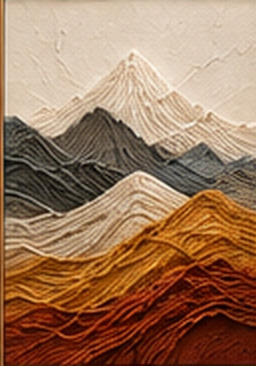
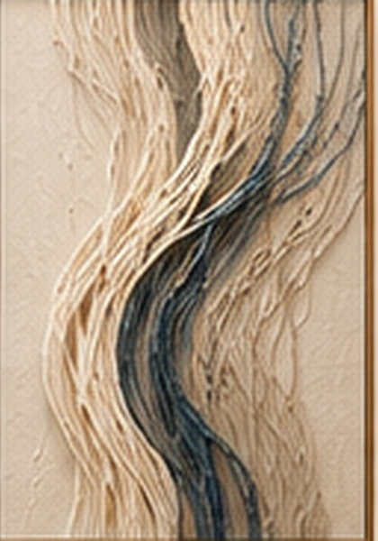

01 / 10
Коллекция.
Разные состояния, объединённые одной идеей: линия может стать искусством.
Представлены визуальные концепции. Изображения будущих готовых работ появятся после создания.

02 / 10
Дыхание
Пространство и тишина03 / 10
Связь
Диалог линий04 / 10
Круг
Бесконечность формы
05 / 10
Дождь
Вертикаль и глубина
06 / 10
Рельеф
Тихая пластика
07 / 10
Пересечение
Ритм и напряжение
08 / 10
Горы
Природа и слои
09 / 10
Волна
Свобода движения10 / 10